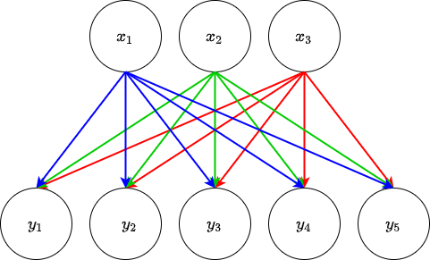

Note
Click here to download the full example code
Using the Fully-connected Layer
The following will demonstrate how to use the FCLayer object from the
neural_network_layers script. This is a highly customisable
fully-connected layer for use in construction of bespoke neural networks. We
will start by importing the object.
import torch
torch.manual_seed(12)
import torch.nn as nn
from neural_network_layers import FCLayer
An FCLayer object can take a variety of arguments during construction (for
more detail see Customisable Neural Network layers). Neural network layers in general are
constructed using two or three objects: a linear function, a normalisation
(optional) and a non-linear function. In a fully-connected layer, the linear
function takes the form a PyTorch nn.Linear
module which maps the input \(x\) to the output \(y\) via the
following equation
where \(\Theta\) is known as the learnable parameters or weights of the
layer – it is a matrix of numbers which multiplies the vector of inputs
\(x\). These are the parameters that are optimised to give the best
transformation of the data. \(b\) is an optional, learnable bias of the
linear transformation. The two main arguments for the linear transformation
(and thus of the FCLayer object) are in_nodes and out_nodes: this
is the dimensionality of the input \(x\) and the dimensionality of the
output \(y\). This is used to construct the learnable parameters
\(\Theta\). in_nodes and out_nodes are integers.
The non-linear function (often referred to as the activation) that is part of
a neural network layer can be set through the activation keyword argument.
Its default value "relu" uses the rectified linear unit non-linearity but
other options of "leaky_relu", "sigmoid" and "tanh" exist 1.
Setting up an FCLayer
To construct the layer we do the following:
fclayer = FCLayer(3, 5)
print(fclayer)
Out:
FCLayer(
(lin): Linear(in_features=3, out_features=5, bias=False)
(act): ReLU(inplace=True)
)
This create a fully-connected layer with input dimension 3, output dimension 5, no bias and the ReLU non-linearity. This is shown in the figure below.
{kind=link}

The input \(x\) consists of three numbers: \(x_{1}, x_{2}, x_{3}\). The output \(y\) consists of five numbers: \(y_{1}, y_{2}, y_{3}, y_{4}, y_{5}\). The arrows indicate that each of the three inputs has a part to play in forming each of the five outputs — this is where the name “fully-connected” comes from, every input is connected to every output. Each of these arrows also represent an element of the learnable parameters \(\Theta\) e.g. the value of \(y_{1}\) is obtained via a linear combination of the input values multiplied by the associated weight for that connection. In more mathematical terms, \(\Theta\) is a matrix consisting of each weight ordered by the connections between the inputs and outputs. Following our example, if we label the weight from \(x_{1}\) to \(y_{1}\) as \(\theta_{11}\), the weight from \(x_{2}\) to \(y_{1}\) as \(\theta_{12}\) and so on and so forth then the matrix of weights can be written as
The output \(y\) can then be calculated via matrix multiplication of \(\Theta\) and \(x\) (plus the potential addition of the bias).
The outputs are then operated on by the activation to produce the final output
of the FCLayer. In this example we use the ReLU activation which will
return the value passed to the function if the value is positive and will
return zero otherwise.
This is equivalent to defining a nn.Sequential object as follows
fcseq = nn.Sequential(nn.Linear(3, 5, bias=False), nn.ReLU(inplace=True))
The main idea is to have a nicer looking way of representing these layers
(especially when the networks get really deep). Each element of the
FCLayer object can be accessed via class attributes .lin` for the
linear function and .act for the non-linearity e.g.
print(fclayer.lin, fclayer.act)
Out:
Linear(in_features=3, out_features=5, bias=False) ReLU(inplace=True)
A dummy input can be created to show that the objects fclayer and
fcseq are equivalent.
dummy_input = torch.randint(
10, (3,)
).float() # randomly sample 3 integers from the range [0,10)
Note
The default random initialisation for nn.Linear objects samples a
uniform distribution bounded by \(\pm 1/\sqrt{dim(x)}\) for reasons
(I really don’t know this answer to why). Due to the nature of the random
sampling, the easiest way to compare these two examples is to initialise
them with the same numbers. Below we initialise them with 0.5
nn.init.constant_(fclayer.weight, 0.5)
nn.init.constant_(fcseq[0].weight, 0.5)
Out:
Parameter containing:
tensor([[0.5000, 0.5000, 0.5000],
[0.5000, 0.5000, 0.5000],
[0.5000, 0.5000, 0.5000],
[0.5000, 0.5000, 0.5000],
[0.5000, 0.5000, 0.5000]], requires_grad=True)
Then the output is calculated for passing the dummy inputs to the different formulations of the layer.
Note
The layers can be applied to inputs in the same manner as functions.
print(fclayer(dummy_input), fcseq(dummy_input))
Out:
tensor([6., 6., 6., 6., 6.], grad_fn=<ReluBackward0>) tensor([6., 6., 6., 6., 6.], grad_fn=<ReluBackward0>)
Further, we can check how the layer we have defined interacts with gradient backpropagation by creating a dummy desired output and a loss function that we want to use to optmise our layer.
output = fclayer(dummy_input)
output_seq = fcseq(dummy_input)
dummy_output = torch.ones(5)
loss = torch.nn.functional.mse_loss(output, dummy_output)
loss_seq = torch.nn.functional.mse_loss(output_seq, dummy_output)
The above code assigns the output of the FCLayer applied to the dummy
input to the variable output alongside the output of the
nn.Sequential’s output being labelled output_seq. Then a fake desired
output of ones in each dimension is created (dummy_output) and the mean
squared error is calculated for each to see how close the layer gets to this
desired output (loss and loss_seq, respectively following the naming
conventions for the outputs). The gradient of the loss with respect to each
weight is then calculated doing the following
loss.backward()
loss_seq.backward()
These calculated gradients can then be accessed from the original objects.
print(fclayer.weight.grad, fcseq[0].weight.grad)
Out:
tensor([[ 8., 10., 6.],
[ 8., 10., 6.],
[ 8., 10., 6.],
[ 8., 10., 6.],
[ 8., 10., 6.]]) tensor([[ 8., 10., 6.],
[ 8., 10., 6.],
[ 8., 10., 6.],
[ 8., 10., 6.],
[ 8., 10., 6.]])
As can be seen, both the outputs and the gradients calculated via backpropagation are identical whether using this customisable block or using raw PyTorch so hopefully having a tidier wrapper to keep everything in is useful!
For more advanced use of the FCLayer object, the interested reader is
referred to Advanced Usage of the Fully-connected Layer.
- 1
These are the most commonly-used non-linearities but implementations of other can be added when needed. Also, a custom non-linearity function being addable is being considered (I only thought of it when writing this document).
Total running time of the script: ( 0 minutes 0.016 seconds)